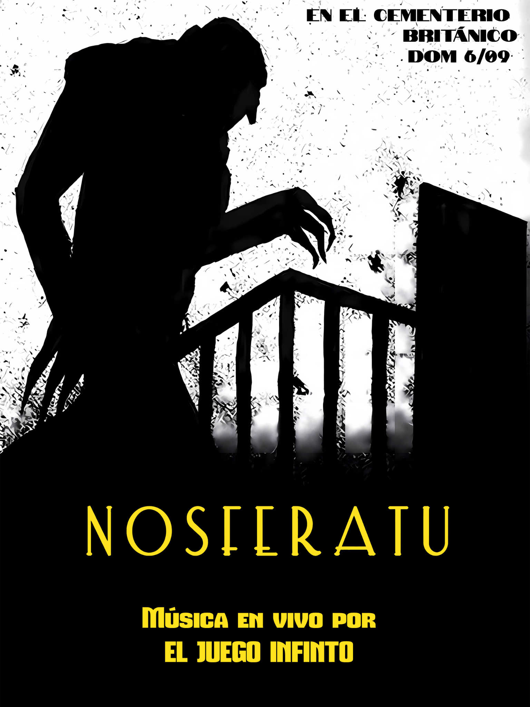

Luego
Nosferatu (1922)
Cementerio Británico · Av. Elcano 4568, CABA
Domingo 6 de septiembre · 19 hs y 21 hs
Una hora antes de cada función se podrá realizar una visita guiada por los sepulcros
📍 Ver en Google Maps
